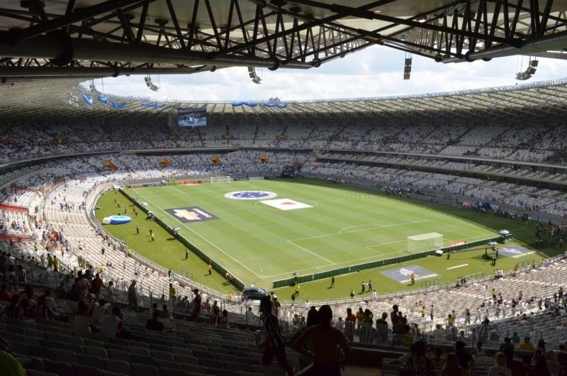

The Pride of Belo Horizonte
Founded in 1921, Cruzeiro Esporte Clube stands as one of the most successful football clubs in South American history. Known as "A Raposa" (The Fox), we have conquered numerous titles and created unforgettable moments in the beautiful game.

6 Copa do Brasil titles - the most in Brazilian football history
Home to some of the greatest talents in world football
One of the most iconic stadiums in South America